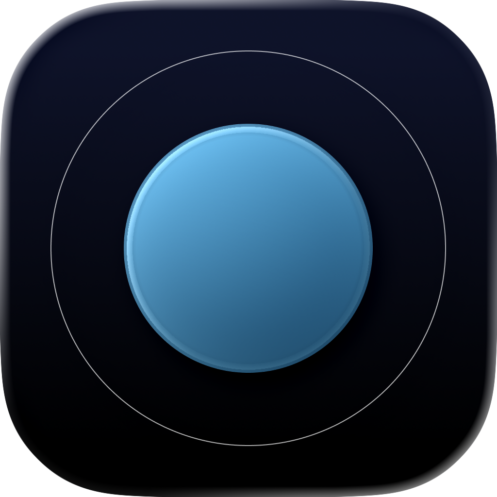
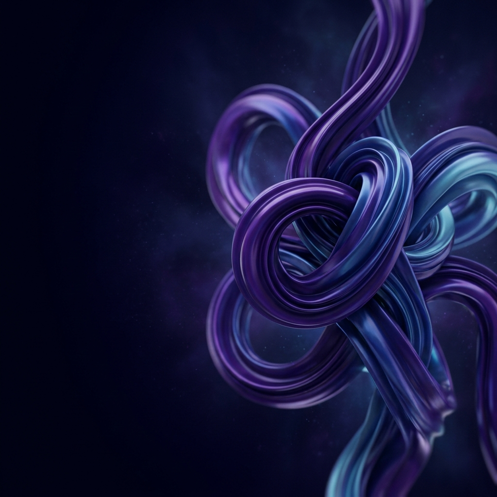
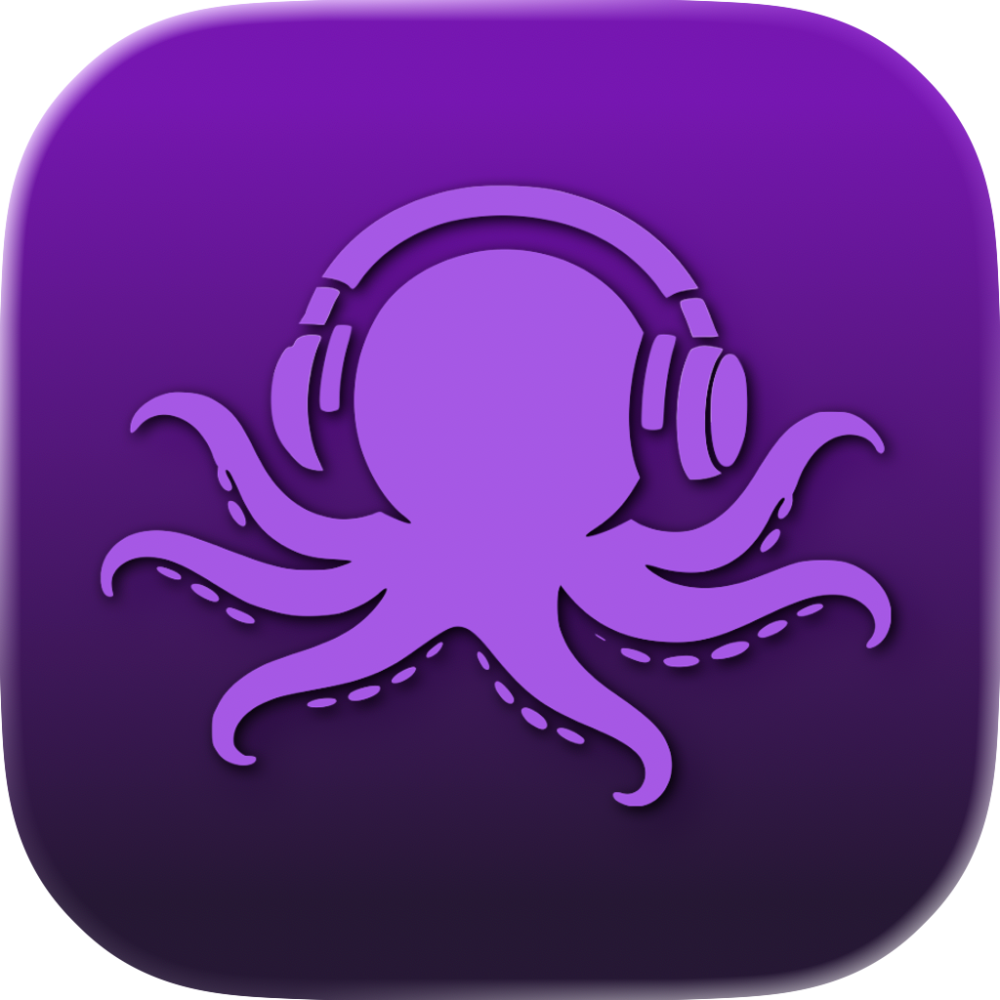
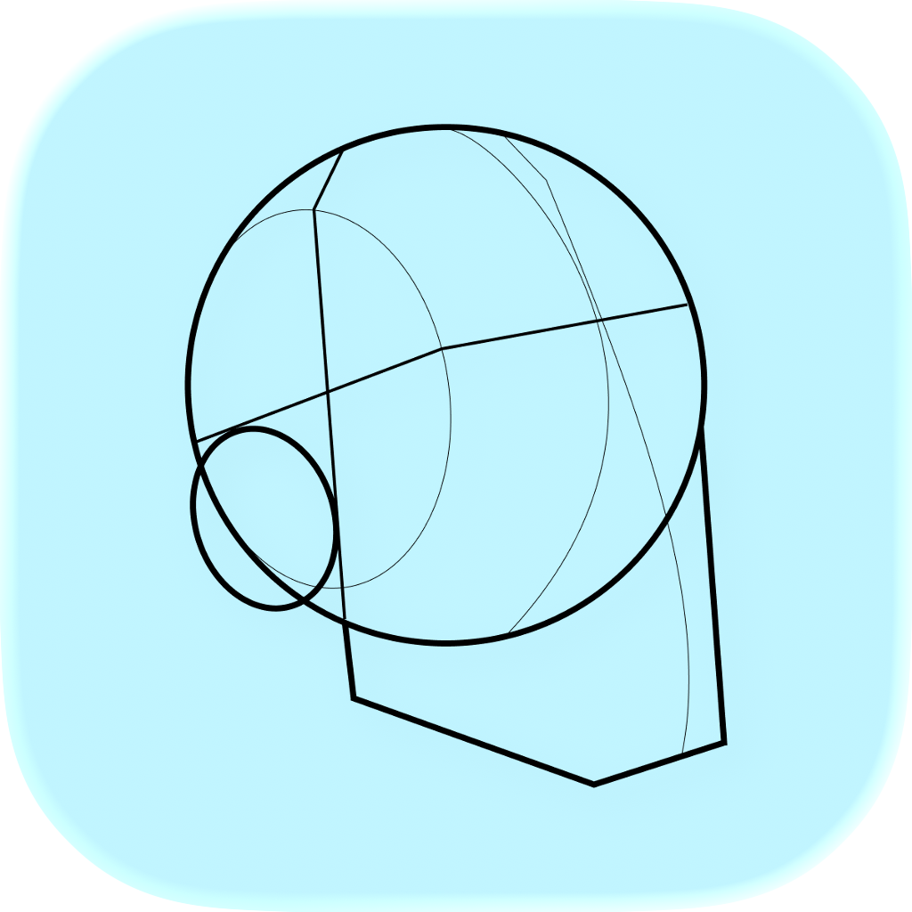

Spheera
Swift • SwiftUI
Your rhythmic sanctuary for immediate anxiety and stress relief. Spheera provides a visual and rhythmic guide to help you calm your nervous system using scientifically-backed breathing patterns.

Computer Engineering Student & Apple Academy Developer.
I build things that make sense and solve real problems.
The bridge between engineering and design.
I have a passion for technology and a natural inclination for problem-solving. I apply this by developing software across the board: from mobile apps and games to websites. I don't just write code; I look for the "why". My philosophy is to build things that actually make sense and solve real problems.
I consider myself extremely versatile. Give me any tool, any environment, any challenge, and I'll figure it out. I pick things up fast and I'm not afraid of starting from zero.
I used to be a solo-coder by nature. Working in teams showed me that when collaboration is done right, the result is exponentially better than anything you could build alone.
I enjoy taking ownership of the entire lifecycle of a project. From the initial spark of an idea, down to the final touches of a polished product, I like to be involved in every step to ensure the vision stays intact.
A selection of apps I designed, built, and shipped.

Swift • SwiftUI
Your rhythmic sanctuary for immediate anxiety and stress relief. Spheera provides a visual and rhythmic guide to help you calm your nervous system using scientifically-backed breathing patterns.
Swift • SwiftUI
A real-time camera app designed as an accessibility tool for color blindness. It analyzes the environment, boosting hard-to-distinguish colors while fading the background for ultra-high contrast.

Swift • SwiftUI
A peer-to-peer iOS app that transforms a group of iPhones into a single synchronized audio system using Multipeer Connectivity, playing music simultaneously without internet.

Swift • SwiftUI
The ultimate 3D posing and drawing tool for artists. Spawn and pose 3D models, bring them into the real world with AR, and trace over your captures using PencilKit.
Unity • C#
A frantic local multiplayer 3D maze racing game with a cross-device ecosystem. Play on a shared screen while using your smartphone's accelerometer as the steering controller.
The tools and languages I use to bring ideas to life.
I use Artificial Intelligence tools to speed up the writing of repetitive code and to brainstorm complex solutions. However, I always maintain full control of the software architecture, critically evaluating the AI's output to ensure clean, performant code that aligns with professional development ethics.